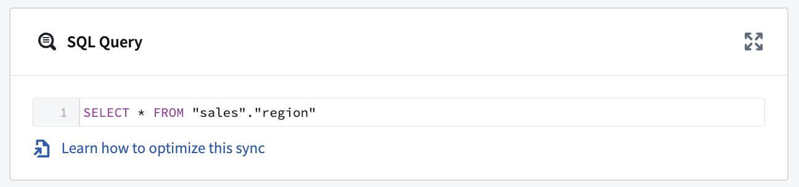

Connect Foundry to Db2 to read and sync data between Db2 databases and Foundry.
| Capability | Status |
|---|---|
| Exploration | ð¢ Generally available |
| Batch syncs | ð¢ Generally available |
| Incremental | ð¢ Generally available |
| Change data capture syncs | ð¢ Generally available |
| Table Exports | ð¢ Generally available |
Learn more about setting up a connector in Foundry.
| Parameter | Required? | Description |
|---|---|---|
URL |
Yes | The JDBC URL that is used by the driver. Comes pre-populated with a template that may need to be modified to ensure correct behavior. Refer to the source system's documentation for the JDBC URL format, and review the Java documentation â for additional information. |
JDBC properties |
Yes | Lists out all required and recommended properties that the driver needs. Hovering over a required or recommended property will allow you to navigate to the official documentation. You can add any additional properties by hitting the + Add property button. |
You can add properties â to your JDBC connection to configure behavior. Certain properties are mandatory for the Db2 driver. These mandatory properties are populated by default and must be set before you can save your source. You can also view recommended properties that you can add by selecting +Add property and viewing the Recommended section.
Hover over the name of a Required or Recommended property to visit the official documentation page for the Db2 driver.
A single SQL query can be executed per sync. This query should produce a table of data as an output and should not perform operations like invoking stored procedures. The results of the query will be saved to the output dataset in Foundry.

The Db2 source type supports table exports. For Db2 databases running on z/OS or LUW (Linux, Unix, Windows), no additional configuration should be required. However, for Db2 databases running on the IBM iSeries or AS/400, journaling â must be enabled for any target tables.
The Db2 connector supports change data capture (CDC) syncs. Db2 CDC syncs are implemented using the Debezium Db2 connector â. To enable CDC on your Db2 instance, follow the instructions outlined in the Debezium documentation â.
Once change data capture is enabled for the table(s) you wish to sync to Foundry, you can navigate to the Overview page and select + Create CDC sync to start creating a new change data capture sync.
:::callout{theme="neutral"} The exploration runtime must be working in order to create a change data capture sync. If the runtime is still initializing, you may need to wait a few seconds and refresh the page to proceed with creating a change data capture sync. :::